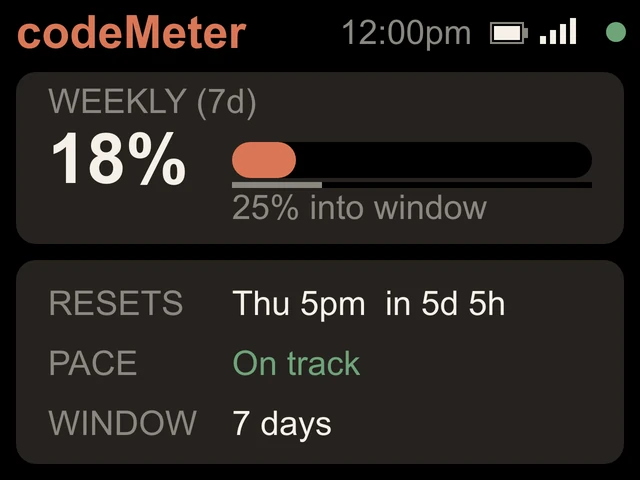
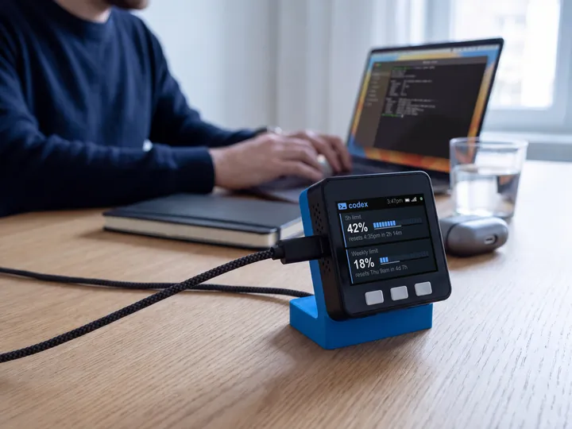

Claude Max
Claude Max, 5x or 20x.
Max gives you more room. codeMeter shows how much of it you have used this week, and whether you will run out before it resets.


5x or 20x
A percent of your own tier.
Claude reports usage as a percent of your plan's limit, not as a count of messages or tokens. So 40% on Max 20x and 40% on Max 5x mean the same thing: 40% of what your plan allows this week.
That is what codeMeter shows. The screen is the same on both tiers; the number moves slower on 20x.
On the screen
Weekly, with a pace check.
Since October 30, 2026, Claude Max has a weekly limit only.
- Percent usedBig enough to read from across the desk.
- Reset and countdownThe reset day and time in your time zone, and how long until then.
- PaceIf you are using the week faster than it is passing, the number turns amber. More than 10 points ahead, it turns red.
Try it
Will it last the week?
Set up
One token, once.
- 1Plug it in
Join the
codeMeter-XXXXXXWi-Fi from your phone. The setup page opens (or visithttp://192.168.4.1). - 2Get your token
On a computer with the Claude CLI, run
claude setup-token. It opens a browser to sign in, then prints a long token. - 3Paste and save
Tap Setup Device, pick Claude Code, paste the token (or scan the QR from the pairing page), choose your home Wi-Fi and Save.
In use
Glance, don't check.
It sits beside the keyboard, so your limits are a look away while you work.


8 stand colours. Pick one to start your build.
FAQ
Questions.
Does it work with Claude Max 5x and Max 20x?
Yes. Both report a weekly limit as a percent of your tier, and codeMeter shows it with the reset time, a countdown and your pace.
Does it show how many messages or tokens I have left?
No. Claude reports a percent of your limit, not a count, so codeMeter shows the percent used.
I have Max at home and Team at work. Can I see both?
Yes. Choose 2 Claude accounts at setup. The Max account shows its weekly line and the Team account shows its monthly line, side by side.
Does checking use up my Claude limit?
Each check is one tiny request on Anthropic's cheapest model, once a minute. It is a negligible slice of your allowance.
Is there a subscription?
No. You buy the device once. Firmware updates are free and install themselves over Wi-Fi; if an update ever fails to start, it rolls back to the previous version.
myDeskMeter